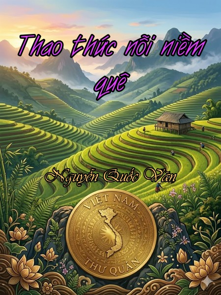

« Back
Thao Thức Nỗi Niềm Quê
By Nguyễn Quốc Văn

Tự
Thao Thức Nỗi Niềm Quê
Con Trâu Thời Thơ Ấu
Rét Gió Chiều Người ...
Xuân Ở Làng Thượng Văn
Tết, Về Hà Nội Hái Tầm Xuân ...
"Khán Khán Nhân Phong" Tình Đời Tình Thơ Tết.
Nơi Quê Cha Đất Tổ
Đường Đến Với Hoa Đào
Khách Văn Thuở Mai Vàng
Cái "Tâm" Trong Tục Xem Chân Gà
Bữa Tiệc Rau Đầu Xuân
Phiên Chợ - Đời Người
Đền Hùng Trong Lòng Người Việt
Đám Giỗ Thầy Đồ
Ngược Dòng Tìm Một Mom Sông
Tuyền Lâm, Chốn Mơ ...
Đà Lạt Ngày Trở Lại
Thay Chân Người Tới Cao Lãnh Thăm Cha
Đi Tìm Cây Lá Dấu
Chơi Trăng Núi Bà Đen